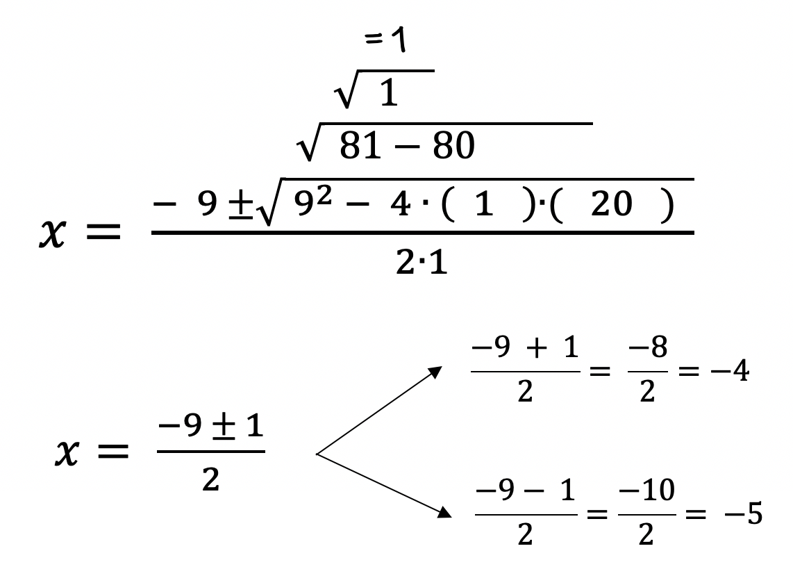
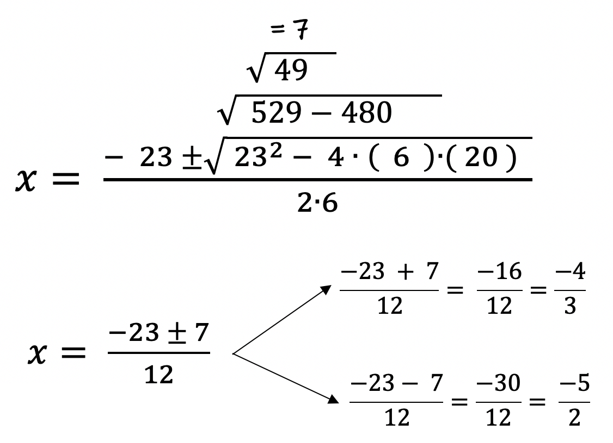

The Quadratic Formula
When you solve the quadratic equation ax2 + bx + c = 0 for variable x, you get what is called the Quadratic Formula.
The variable values of a, b, and c will be needed for the formula.
The Quadratic Formula
To pronounce the formula you would say:
"x equals negative b, plus or minus the square root of b squared minus four times a times c, all over 2 a".
In Algebra 2 and later math courses you will learn how to solve a quadratic equation for x. Here, we just use the Quadratic Formula to solve for variable x.
Because the Quadratic Equation has exponents, multiplication, subtraction, addition, and division, we must use PEMDAS to solve the equation correctly.
Below, you will see a memory device for the Quadratic Formula. It is easy to use, you just have to do the same steps for every problem. Filling in each variable into its location takes a moment if you use the formula set out for you. When we solve for x, we will do all operations under the square root, then take the square root of the number. Then you get to step 2.
Below you see the "shell" for the formula. It is the same for every problem.
Let's look at some examples:
Example 1: Solve: x2 + 9x +20 = 0.

Example 2: Solve: x2 + 15x + 54 = 0.
Example3: Solve: 2x2 + 14x + 24 = 0.
Example 4: Solve: 6x2 + 14x - 12 = 0.
Example 5: Solve: 6x2 + 23x + 20 = 0.

When solving the Quadratic Equation, use the same steps every single time. The only thing that changes each time is the values of a, b, and c. The format used here, simplifying the square root values by writing each new expression above the square root sign is done for ease and makes the repetition to solve the equation much faster then trying to re-write the expression everytime we do one step. It also makes it easier for you to remember if you use the same repetion every time.